Brand GuidelinesVersion 6 · October 2026
How Faith Reins looks, sounds and shows up.
For staff, volunteers, designers, printers and partners. Questions about using the brand: hello@faithreins.org
Contents
What’s inside
01Who we are03
02Voice and copy04
03Logo: primary lockup, construction, variations, misuse05
04Color09
05Typography11
06Photography13
07Layout and interface elements15
08Use cases: web, social, print16
09Merchandise18
10Asset files20
01 · Who we are
Patient work, gentle horses, lasting change.

Faith Reins is a 501(c)(3) non-profit pediatric and equine therapy practice in South Arkansas. We offer speech-language, occupational and physical therapy, counseling and equine-assisted learning, in the clinic and in the arena.
FamiliesParents looking for care that feels personal, clinical and close to home.
Referring providersPediatricians and specialists who need a reliable, credentialed partner.
Donors and sponsorsNeighbors, churches and businesses who make every session possible.
Brand character
CalmWarmClinically preciseFaithful, never preachy
02 · Voice and copy
We sound like a clinician who is also a neighbor.
Person“We” for Faith Reins; “you” and “your child” for families. Speak to parents directly.
CasingSentence case for headings and body. Uppercase tracked only for labels, nav, buttons and the tagline.
HeadlinesShort declaratives, often in three beats, with at most one italic word. No exclamation marks.
PrecisionName the real skills: articulation, feeding and swallowing, sensory processing, gait.
StewardshipNever invent statistics. Say what gifts do: fund sessions, feed and shoe the horses, open spots on the waiting list.
HorsesAlways by name: Biscuit, Maple, Cowboy, Captain Carrot.
Calls to actionVerb plus object: Contact us, Send a referral, Request an appointment, Support Faith Reins. Use “Support”, not “Donate”.
PunctuationNo serial comma. No emoji.
Say this“Every plan begins with a licensed evaluation and measurable goals, shared with you.”
Not this“Amazing, life-changing results for 100s of kids — donate NOW!!”
03 · Logo
The primary lockup
The horse emblem, FAITH REINS set in Libre Caslon Text, and the tagline between gold rules. It is the default logo everywhere. Always use the supplied files. Never retype or redraw it.
Light: green emblem and wordmark, gold-ink tagline, gold rules. For cream, white and sand grounds.
Dark: cream emblem and wordmark, light-gold tagline and rules. For forest green only.
03 · Logo
Clear space and minimum size
Clear space (x) is the height of the letter F in FAITH REINS. Keep at least that much empty space on every side. No other type, image edge or rule may enter it.
VersionScreen minimumPrint minimum
Horizontal lockup180 px wide1.75 in wide
Stacked lockup120 px wide1.25 in wide
Horse emblem alone24 px tall0.3 in tall (embroidery 0.5 in)
TaglineDrop it below 180 pxDrop it below 1.75 in
03 · Logo
Variations
StackedSquare or tall formats: full-front shirts, signage, posters, social covers.
Emblem + wordmarkWhen the tagline would print too small: youth chest prints, pens, small labels.
Emblem · gold (green grounds only)
Use the emblem alone only where the name already appears nearby, or where space is tiny: favicon, caps, keychains, social avatars, embroidery.
03 · Logo
Please don’t
× Recolor it outside the palette
× Add shadows, glows or bevels
× Place it on a busy photo without a scrim
Faith Reins
× Retype the name in another font
× Enclose it in shapes (avatars excepted)× Fade it or use it as a watermark
04 · Color
Forest, cream and a little gold
Forest Green#173A2E · RGB 23 58 46
Headings, primary buttons, footer, green bands
Cream#F3EEE4 · RGB 243 238 228
Page field
Sand#E7E0D2 · RGB 231 224 210
Alternate bands
Gold#B08D57 · 176 141 87
Rules, underlines, accent CTA
Light Gold#D5BC8A · 213 188 138
Labels and rules on green
Gold Ink#7A5E2E · 122 94 46
Eyebrows and taglines on light
Deep Green#0E2019 · 14 32 25
Hover states, photo scrim
Ink#1A2620 · body on light
Muted#4B5249 · secondary text
Paper#FBF8F1 · form panels
For print, have the printer match these colors to the nearest Pantone and CMYK values on a proof before a full run. No blues, no gradients as backgrounds, no new hues.
04 · Color
Proportion and contrast
Cream 55%Green 22%Sand 15%WhiteGold
Cream sets the calm. Green carries the brand. Gold is a thread, not a fill. White is reserved for bands that need to read as a new section.
Green on cream11.1 : 1 · all text
Cream on green11.1 : 1 · all text
Light gold on green6.7 : 1 · labels, small text
Gold ink on cream5.4 : 1 · labels, small text
Muted on cream7.0 : 1 · body text
Dark on gold5.6 : 1 · accent button only
AvoidGold #B08D57 text on cream (2.9 : 1, decoration only). Cream type on photos without the green scrim. Gold text on sand.
05 · Typography
Three faces, one voice
Display · Libre Caslon Display 400Aa Bb Cc 123Heroes and section titles. 40px and up. Never bold, never all caps.
Text serif · Libre Caslon Text 400 / italicAa Bb Cc gentleFeature headings, card titles, lead paragraphs, the wordmark and the one italic emphasis word.
Sans · Hanken Grotesk 400 / 600Aa Bb Cc 123 LabelsBody copy (400) and every uppercase tracked label: eyebrows, nav, buttons, tagline (600).
Get the fonts: all three are free from Google Fonts under the SIL Open Font License. Install them for print and Office use.
Fallbacks: Georgia for the serifs, Arial for Hanken Grotesk. Use them in email and in Office files when the brand fonts aren’t installed.
05 · Typography
Hierarchy
HERO
86 / 1.0 · DisplayCare close to home
SECTION TITLE
46 / 1.1 · DisplayFive ways we help
CARD TITLE
28 / 1.15 · TextWhat to expect at your first visit
LEAD
20 / 1.6 · TextLicensed speech, occupational and physical therapy for children.
BODY
16–17 / 1.65 · SansEvery plan begins with a licensed evaluation and measurable goals, shared with you and your child’s physician.
EYEBROW
11 · 600 · +.26emMeet the herd
BUTTON
12 · 600 · +.14emRequest an appointmentOur therapies
On mobile, the hero drops to 44px and section titles to 32px. Body text never goes below 16px on screen or 10pt in print.
06 · Photography
Warm light, real moments

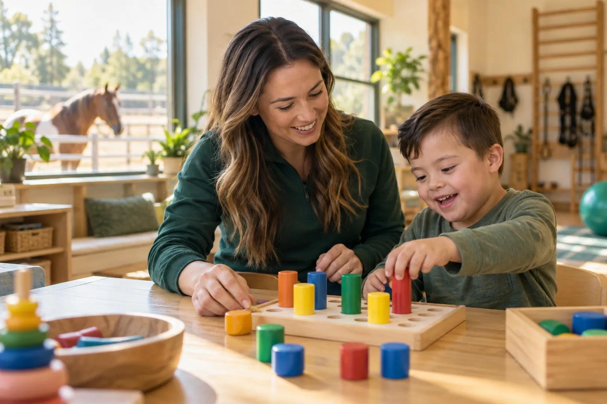

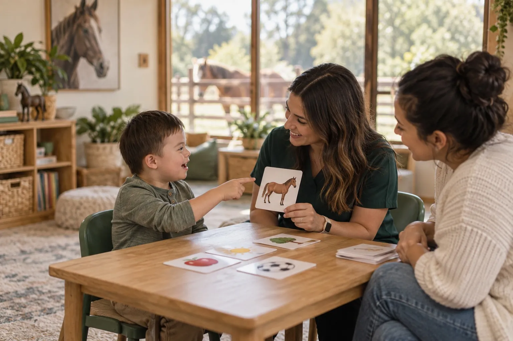

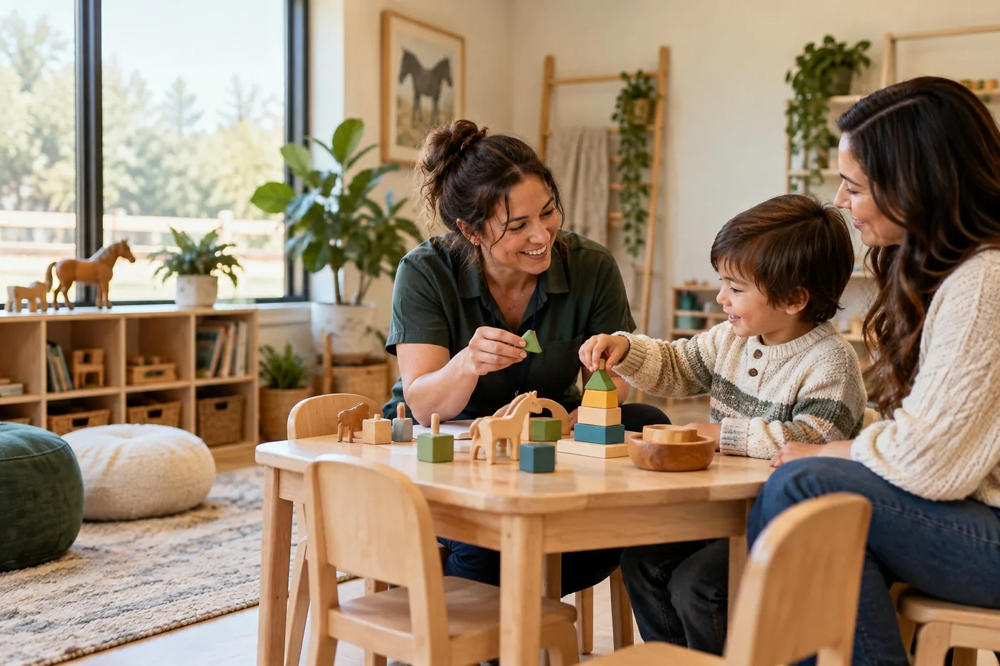
DoNatural, golden-hour light · children and horses together · hands-on therapy in the clinic and arena · our real horses, by name · photos run full-bleed or edge to edge
Don’tStock or staged corporate images · heavy filters · frames, rounded corners or drop shadows · type over faces · the same hero photo on two pages · a child’s photo without signed consent
06 · Photography
Type on photos

GiveKeep care close to homeYour gift opens a spot for a child on our waiting list.
Type sits on the left third over a deep-green scrim that fades from 85% to clear by about three-quarters of the width. No blur and no text shadows. On mobile the scrim runs bottom to top, and the photo is cropped so the subject stays in frame.
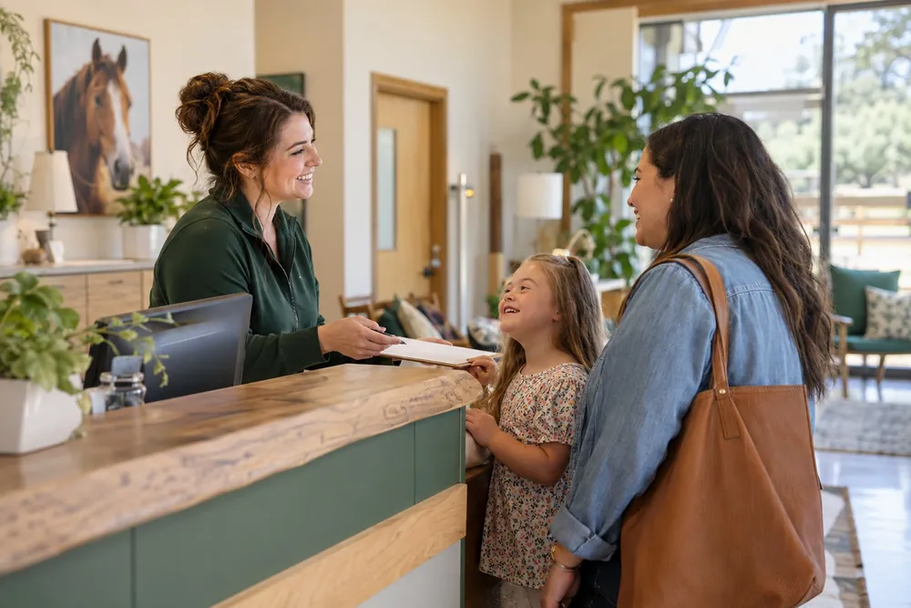
✓ Mobile crop keeps the child in frame× Default center crop loses the subject
07 · Layout and interface
Rules, not boxes
A non-profit serving South Arkansas families(870) 555-0142 · For Providers · Contact
TherapiesFamiliesOur HorsesAboutShopSupport
Double header: green utility bar over a cream main bar. It stays fixed at the top while the page scrolls. The logo never changes across breakpoints; it only scales down.
Buttons · square corners
Primary · greenAccent · gold (Support only)OutlineText link →
Index list
Speech & Language→
Occupational→
Physical→
Grid: 1440 desktop · 768 tablet · 375 mobile. Gutters 64 / 40 / 20px.
Space: sections 96 / 80 / 64px tall. Tap targets 44px minimum.
Focus: 2px gold outline, 2px offset. No shadows, no rounded corners.
08 · Use cases
Social and email
Profile avatarA cream emblem on a green circle. This is the only place the emblem sits inside a shape, because platforms crop avatars to circles. The same art works as the favicon.

Meet the herdMaple is the first friend many children meet.
From a parent“She talks to Captain Carrot first, and then she talks to us.”
Quote post: green field, Caslon italic, lockup
Email signature
First Last, MS, CCC-SLPSpeech-Language Pathologist · Faith Reins(870) 555-0142 · faithreins.org
08 · Use cases
Print
Business card front, 3.5 × 2 in
First LastOccupational Therapist
(870) 555-0142
name@faithreins.org
faithreins.org
FAITH REINS · A 501(c)(3) NON-PROFIT · SOUTH ARKANSAS
Print rules
Use the vector or 300 dpi files in the asset package. Never screenshot the website logo.
Uncoated, warm-white stock suits the cream palette. Avoid bright blue-white paper.
Gold prints as a solid ink. Request a proof, since metallic and CMYK golds shift.
Minimum type in print: 9pt for body, 7pt for tracked labels.
Signage and banners use the stacked lockup on forest green, with the tagline at least 1 in tall at viewing distance.
09 · Merchandise
Wear the mission
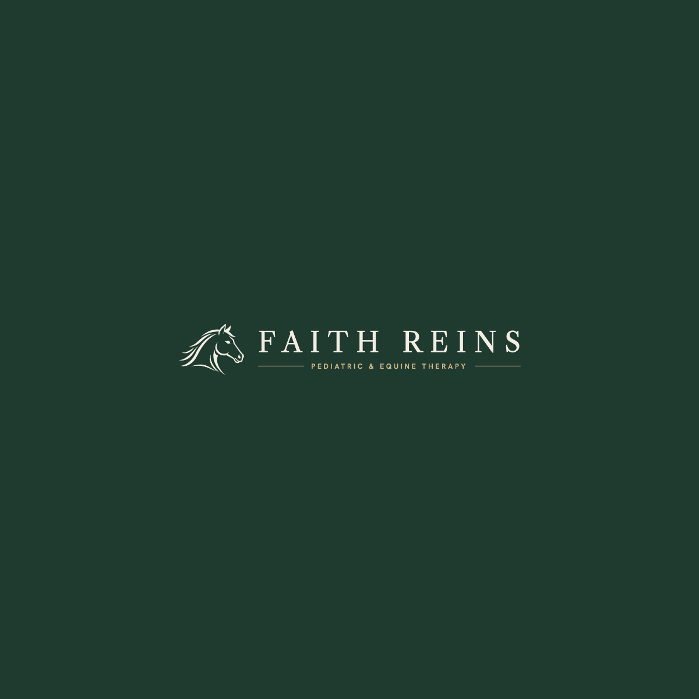
Men’s tee · left chest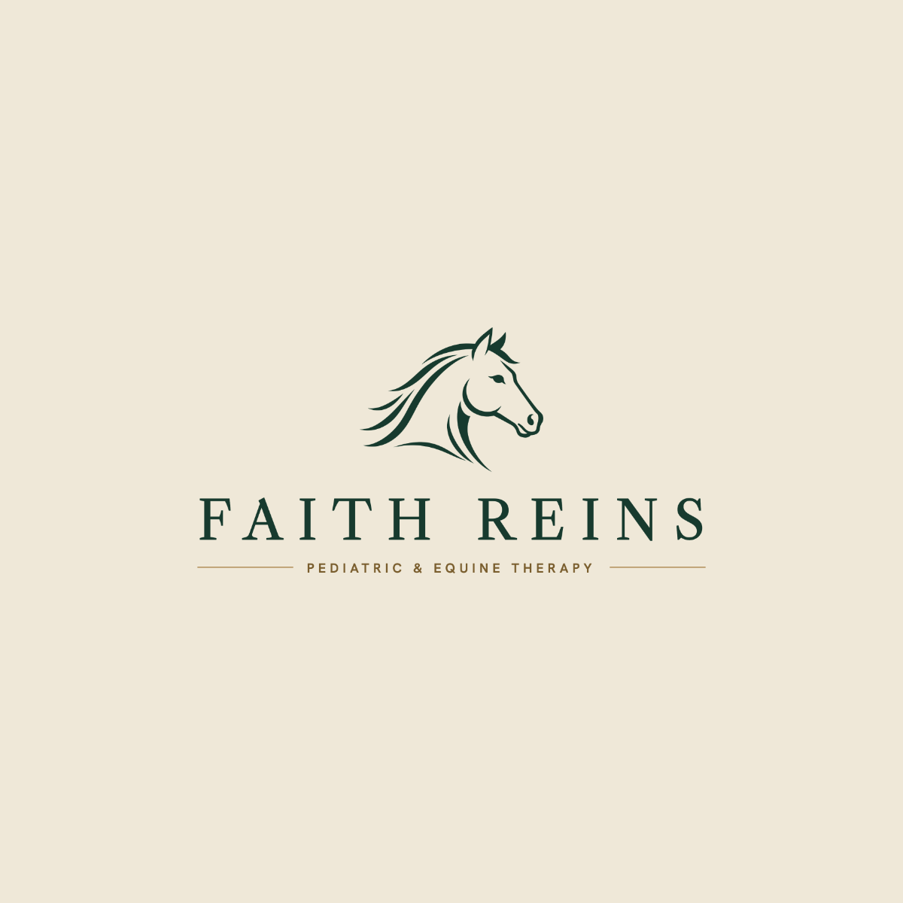
Women’s tee · full front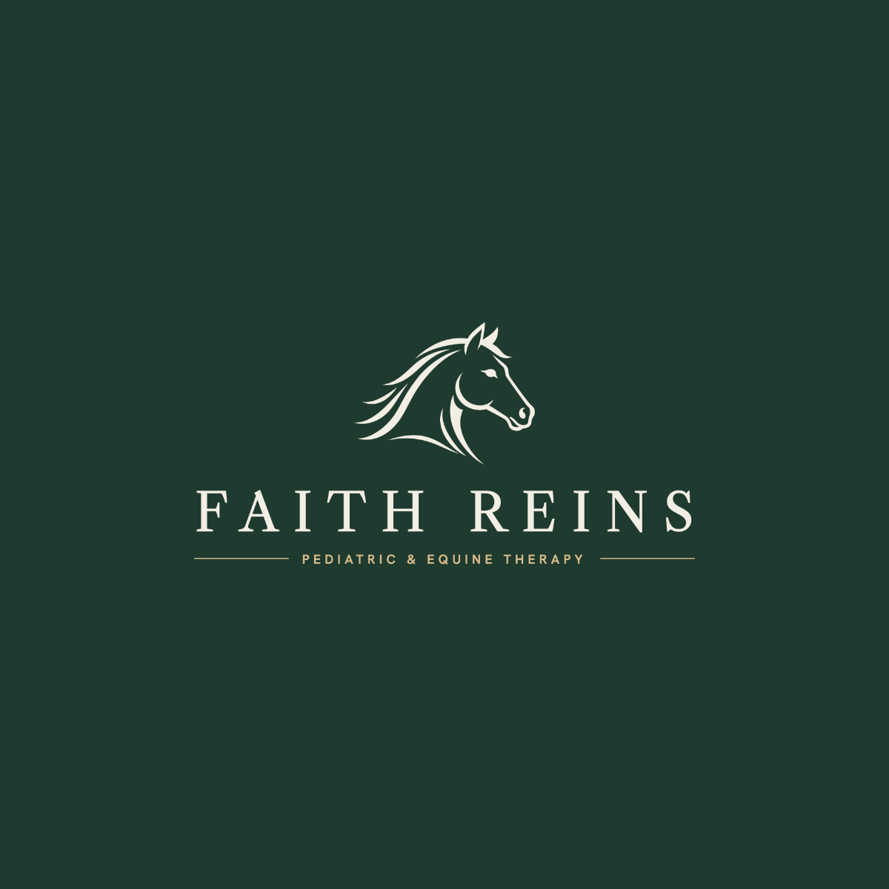
Heritage hoodie · full front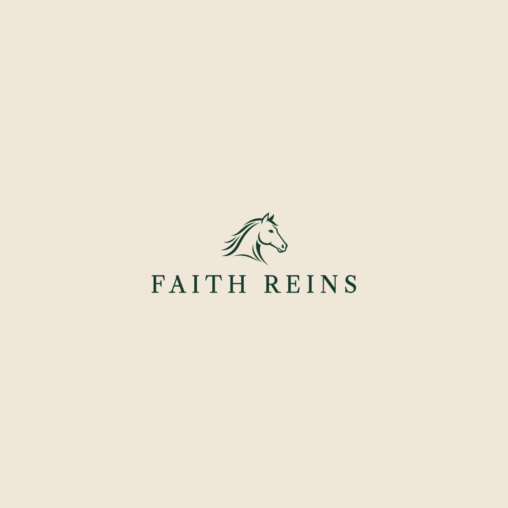
Youth tee · emblem + wordmarkCap · embroidered emblem
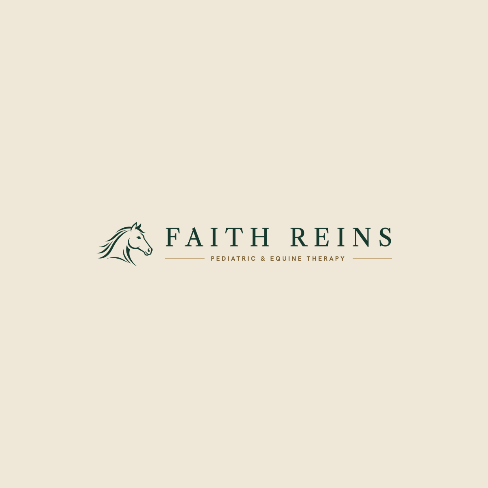
Mug · horizontal lockup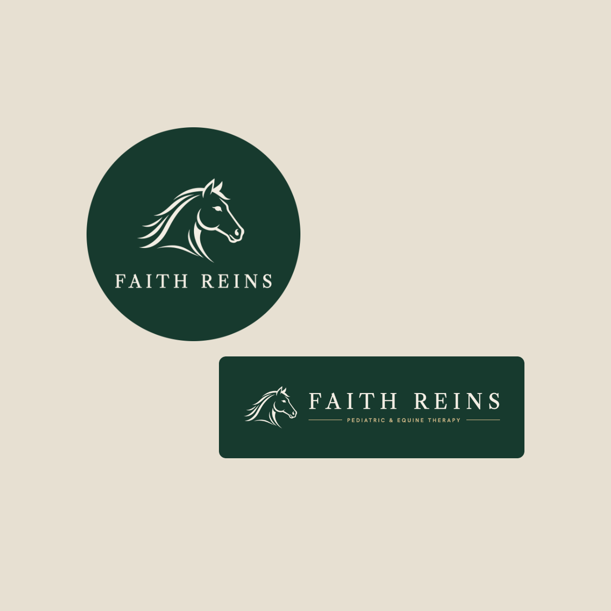
Stickers · round + bumper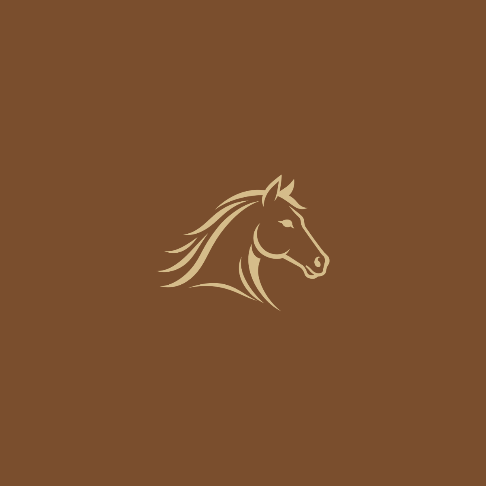
Keychain · gold emblem
PlacementArtworkSize
Left chestHorizontal lockup3.5 in wide (youth 3 in)
Full frontStacked lockup10 in adult · 8 in youth · 6 in toddler
Caps and beaniesEmblem only, embroidered2.25 in tall maximum
DrinkwareHorizontal or stacked lockup3.25 in wide, centered on the handle side
Garment colors: forest green with cream ink, natural or cream with green ink. No heather grey, black or bright colors.
One product per fit: men’s or unisex, women’s, youth and toddler are separate products, each with its own size chart. Never mix fits in one size menu.
09 · Merchandise
Fits and size runs
The charts give body measurements in inches. Confirm them against the vendor’s blank before each order, since brands differ.
Men’s / Unisex · chestXS31–34
S34–37
M38–41
L42–45
XL46–49
2XL50–53
3XL54–57
Women’s · bust · US sizeXS31–32 · 0–2
S33–34 · 4–6
M35–36 · 8–10
L37–39 · 12–14
XL40–42 · 16
2XL43–45 · 18
Youth · chest · ageYXS23–24 · 4–5
YS25–26 · 6–8
YM27–28 · 10–12
YL29–30 · 14–16
YXL31–32 · 18–20
Toddler · height · weight2T33–35 in · 26–29 lb
3T36–38 in · 30–33 lb
4T39–41 in · 34–38 lb
5T42–44 in · 39–42 lb
Caps come in separate adult and youth versions, both adjustable. Beanies are one size. Product images and names always state the fit, for example “Women’s Hoodie” or “Youth Tee”.
10 · Asset files
Where to find everything
assets/logo/Horse emblem in green, cream and gold (transparent PNG), plus the master file
assets/merch-artwork/Horizontal, stacked and wordmark lockups in green and cream, emblems and stickers. 300 dpi transparent PNG.
assets/heroes/desktop · mobilePaired hero photography, one per page. Never reuse a hero on two pages.
assets/horses/Herd portraits: Biscuit, Maple, Cowboy, Captain Carrot
tokens/ · styles.cssColor, type and spacing values for the website
components/ · ui_kits/website/Interface components and all 25 page mocks
ui_kits/website/data/merch-catalog.jsonProducts, fits, size runs and size charts
RetiredThe “Faith Reins Equestrian Center” logo, the circular “Est. 2025” seal, Noto Serif/Noto Sans and pill-shaped buttons are retired. Replace them wherever they still appear: old merch, the shop hero and any printed materials.
Brand Guidelines v6 · October 2026
hello@faithreins.org